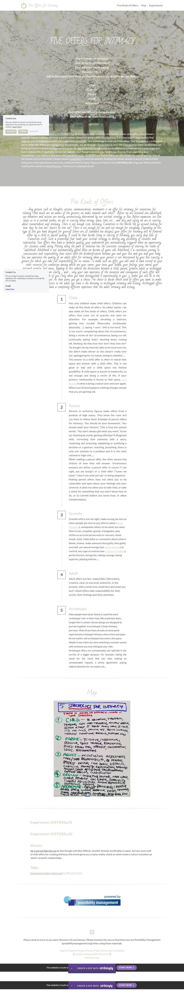

5 Offers for Intimacy on Strikingly
Five Kinds of Offers
Any gesture, such as thoughts, actions, communications, movements is an offer for intimacy, for connection, for relating. How much are we aware of the gestures we make towards each other? Before we are initiated into adulthood, our behaviors and actions are mostly unconsciously determined by our survival strategy or Box. Before expansion, our Box keeps us in a survival modus, we are in scarcity about money, space, time, etc ... and also and surely we are in scarcity about connectedness and intimacy. There is not enough Love, Intimacy, Connection in the World. We go around looking for love: does he love me? doesn't he love me? There is not enough for me and not enough for everybody. Depending on the type of Box you have designed for yourself (there are 18 standard box designs), your offers for intimacy will be flavored either by a child or parent quality. It could be that besides living in scarcity of Intimacy, you carry deep fear of Connection itself. Such a primordial fear leads your survival strategy to destroy any possibility of closeness and relationship. Your offers then have a Gremlin quality, your underworld gets automatically triggered when an opportunity for closeness comes along. Moving along the path of evolution has the consistent consequence of entering the realm of adulthood. Adulthood is not automatically gifted when we become 18 years old. Adulthood is a continuous journey in consciousness and responsibility that starts with the disidentification between you and your Box and you and your body. You can experience the quality of an adult offer for intimacy when your gesture is not determined by your Box scarcity, a gesture for which you take full responsibility for no reason. To make such an offer, you will need to have turned on your inner resources for connection among which are your center, your voice, your bubble, your feelings, your sword, your initiated gremlin, and more... Reading in this website the distinctions between a child, parent, gremlin, adult or archetypal offer will give you some clarity ... and ... only your own experience of the sensation and consequence of each offer will imprint the map inside of you. Only when you have distinguished it experientially in your 5 bodies you will be in the presence of the distinction. At that point, you get a choice. The choice to decide which kind of offers you want to make to create relationship. Access to the adult ego state is the doorway to archetypal intimacy and ecstasy. Archetypal offers have a completely different experience that the adult intimacy and ecstasy.
Child
Not only children make child offers. Children can make all five kinds of offers. So-called 'adults' can also make all five kinds of offers. Child offers are offers that come out of scarcity and need for attention. For example: throwing a tantrum, getting into trouble (financially, emotionally, physically, ...), saying 'I can't', 'this is too hard', 'this is too much', complaining about the circumstances, being a victim of the circumstances, being cut off, continually asking 'why?', shutting down, cutting off, thinking 'do they love me? don't they love me?' 'he bought me my favorite cake so he must love me, she didn't make dinner so she doesn't really love me', apologizing for no reason, being in rebellion, ...
The answer to a child offer is often to match that space and answer with a child offer. This is not good or bad and a child space has limited possibility. A child space is bound to mediocrity, to not enough and being a victim of life. If your primary relationship is bound to that space, Low Drama is what is being created over and over again. When Low Drama happens, nothing changes except that you are getting old.
Parent
Parents or authority figures make offers from a position of high status. They know the rules and you have to follow them. Example of parent offers for intimacy: 'You should do your homework', 'You should wash your kitchen', 'This is how the system works', 'You don't always get what you want', 'Grow up' meaning be numb, getting offended if disagreed with, correcting how someone tells a story, reasoning and analyzing, explaining or justifying a decision or a gesture, teaching, preaching, there is only one solution to a problem and it is the most rational or logic one, ...
When making a parent offer, the other person has choices of how they will answer. Unconscious answers are either a parent offer in return ("I am right, you are wrong") or a child offer ("Leave me alone" "I don't care what you say" or being adaptive).
Making parent offers does not allow you to be vulnerable and open about your feelings and your universe. It does not allow you to take risks, or take a stand for something that you don't know how to do, or to commit before you know how, or allow transformation.
Gremlin
Gremlin offers are: be right, make wrong, be nice so other people are nice to you (this is called Being Adaptive), manipulate others to do what you want them to do, complain, gossip, triangulate, play victim so as to be persecuted or rescued, cheat, sneak, steal, make jokes or comments about others, blame, shame, make someone feel guilty, feel guilty yourself, use sexual energy (see white widows) to control, any type of control (see 5 types of control), perfectionism, being late, taking revenge, being superior, playing inferior, ...
Adult
Adult offers are fair, responsible, informative, creative, clear, on eye level, authentic, in the present, with a small now, small here and small you and I. Adult offers take responsibility for their center, their feelings and their attention.
Archetypal
Most people have never heard or used the word ‘archetypal’ ever in their lives. We could have been taught this in school. Human beings are designed to journey together in archetypal 5 body intimacy journeys. Most of you have already at some point experienced archetypal intimacy where time and space do not matter and archetypal love enters the space. Maybe it was when you were watching a summer sunset with someone you love sitting by your side.
Archetypal offers are unreasonably and radically in the service of a bigger purpose. For example, taking the stand for the stand that you take, making an unreasonable request, a pirate agreement, paying radical attention for no reason, etc...